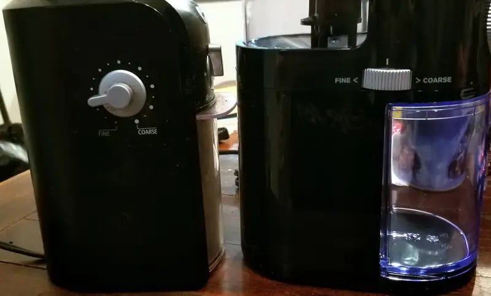
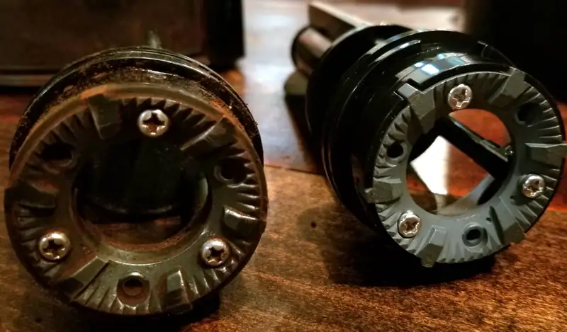
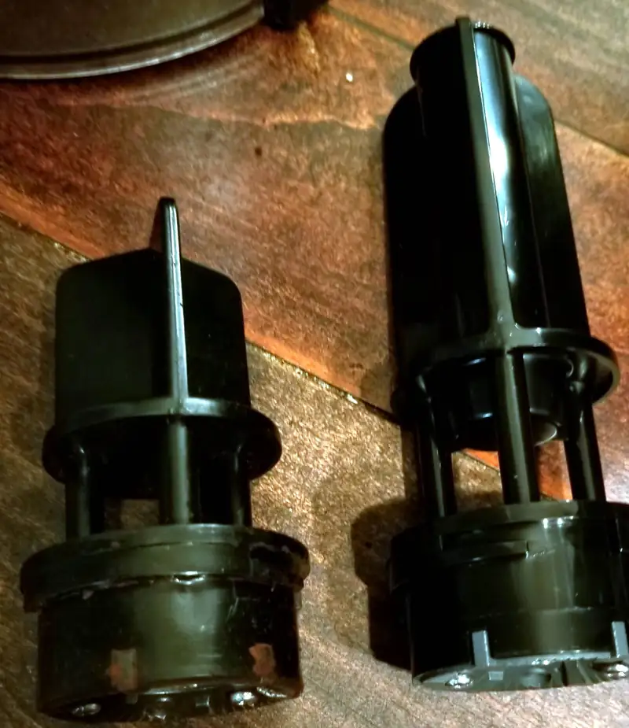
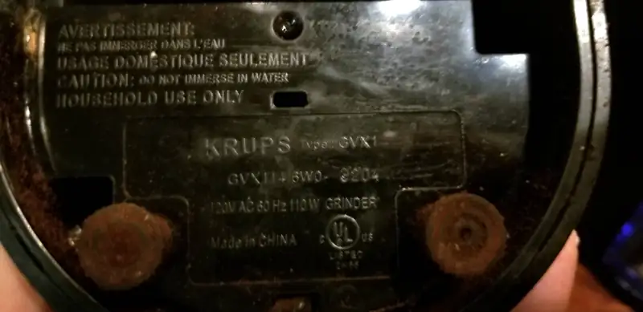
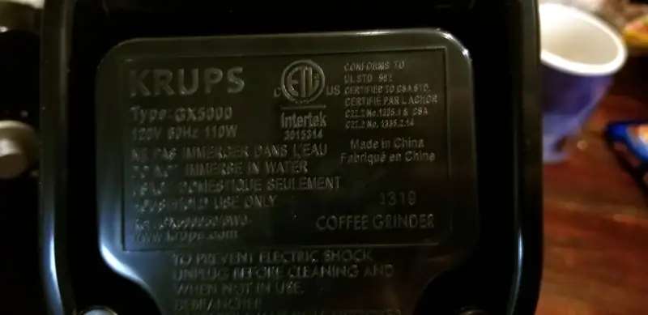

Reemplazando el molino de café
Pues sí, como dice el título, después de ~15 años de servicio el viejo molino ya dejó de estar al 100%. No, no ha fallado del todo, todavía muele, pero ya no se detiene cuando llega a la cantidad seleccionada. En fin, tal vez lo logre arreglar y se queda de reemplazo por si el nuevo no dura ni la mitad del viejo.
Aquí unas fotos de los dos molinos juntos
{kind=link}

{kind=link}
Los implementos del molino en sí parecen ser iguales

{kind=link}
Con la excepción de la longitud

{kind=link}
 
{kind=link}
{kind=link}
Me sorprende un poco que no ha cambiado mucho la ... digamos, morfología del molino, hasta apostaría a que por dentro son casi idénticos.
Y así, después de más de 15 años, jubilamos al molino de café. Nisiquiera soy el primer dueño porque lo compré en una segunda en Ensenada. Y su vida no tan fácil, al menos por un tiempo lo tuve en el restaurante y después en la casa donde hacemos una o dos jarras de café al día. Hace ruido? un chingo, especialmente comparado con el nuevo.